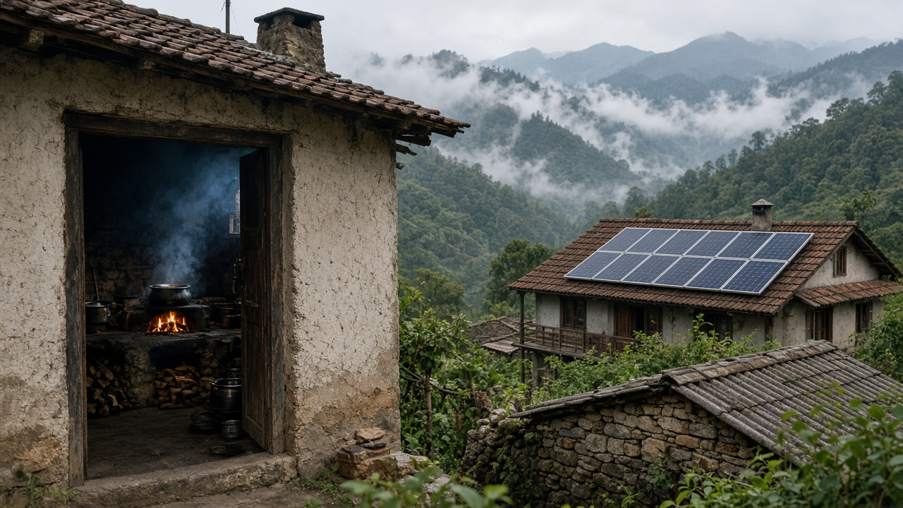

Carbon Footprint & Personal Impact
Published on July 8, 2026
A carbon footprint measures the total greenhouse gas emissions associated with an individual, household, organization, or product, usually expressed in carbon dioxide equivalents. It encompasses direct emissions from activities such as driving, cooking with fossil fuels, and heating homes, as well as indirect emissions embedded in food, clothing, electronics, and services consumed daily. Calculating a footprint helps people understand how lifestyle choices translate into climate impact and where the largest reduction opportunities lie. Online calculators and mobile apps estimate footprints using data on transport, diet, energy use, and spending patterns.
Personal carbon footprints vary enormously across and within countries. Wealthier lifestyles typically involve more air travel, larger homes, and higher consumption of meat and manufactured goods. In many developing contexts, footprints are lower on average but may include significant emissions from biomass burning, inefficient cookstoves, or diesel generators where clean alternatives are unavailable. Individual action—choosing public transport, reducing food waste, improving home efficiency, and shifting toward plant-rich diets—can meaningfully lower emissions, especially when scaled across communities. However, structural factors such as electricity grid composition, urban design, and product availability strongly shape what individuals can realistically change.
Understanding personal impact also highlights the limits of individual responsibility alone. Systemic transformation of energy, industry, and agriculture requires policy, investment, and corporate accountability alongside consumer choices. Education about carbon footprints should empower action without shifting blame entirely onto individuals least responsible for historical emissions. Combining personal behavior change with advocacy for renewable energy, public transit, and sustainable agriculture creates a more balanced approach. Footprint awareness remains a valuable entry point for climate engagement, helping people connect abstract global trends to concrete decisions in their daily lives.
कार्बन फुटप्रिन्टले व्यक्ति, परिवार, संस्था वा उत्पादनसँग सम्बन्धित कुल ग्रीनहाउस ग्यास उत्सर्जन माप्छ, जुन सामान्यतः कार्बन डाइअक्साइड बराबरमा व्यक्त गरिन्छ। यसमा गाडी चलाउने, जीवाश्म इन्धनले खाना पकाउने र घर तताउने जस्ता गतिविधिबाट प्रत्यक्ष उत्सर्जन, साथै दैनिक उपभोग हुने खाना, लुगा, इलेक्ट्रोनिक्स र सेवाहरूमा समावेश अप्रत्यक्ष उत्सर्जन पनि समावेश हुन्छ। फुटप्रिन्ट गणना गर्दा जीवनशैलीका छनोटहरूले जलवायु प्रभावमा कसरी परिणत हुन्छन् र सबैभन्दा ठूलो कटौतीका अवसरहरू कहाँ छन् भन्ने बुझ्न मद्दत हुन्छ। अनलाइन क्याल्कुलेटर र मोबाइल एपहरूले यातायात, आहार, ऊर्जा प्रयोग र खर्च ढाँचाका डेटा प्रयोग गरी फुटप्रिन्ट अनुमान गर्छन्।
व्यक्तिगत कार्बन फुटप्रिन्ट देशभित्र र देशहरू बीच धेरै फरक हुन्छ। धनी जीवनशैलीमा प्रायः बढी हवाइ यात्रा, ठूला घर र मासु तथा औद्योगिक सामानको बढी उपभोग हुन्छ। धेरै विकासशील सन्दर्भमा औसत फुटप्रिन्ट कम हुन्छ, तर बायोमास जलाउने, अकुशल चुलो वा स्वच्छ विकल्प नहुँदा डिजेल जेनेरेटर प्रयोगबाट महत्वपूर्ण उत्सर्जन हुन सक्छ। सार्वजनिक यातायात छान्ने, खाद्य अपव्यय घटाउने, घरको दक्षता बढाउने र वनस्पति–समृद्ध आहारतर्फ सर्ने व्यक्तिगत कार्यले, विशेष गरी समुदाय स्तरमा विस्तार हुँदा, उत्सर्जन उल्लेख्य रूपमा घटाउन सक्छ। तर बिजुली ग्रिडको संरचना, शहरी डिजाइन र सामान उपलब्धता जस्ता संरचनात्मक कारकहरूले व्यक्तिहरू वास्तवमा के परिवर्तन गर्न सक्छन् भन्ने कुरा निर्धारण गर्छ।
व्यक्तिगत प्रभाव बुझ्दा व्यक्तिगत जिम्मेवारीको सीमा पनि देखिन्छ। ऊर्जा, उद्योग र कृषिको प्रणालीगत परिवर्तनका लागि उपभोक्ता छनोटका साथै नीति, लगानी र कर्पोरेट जवाफदेहिता आवश्यक छ। कार्बन फुटप्रिन्ट सम्बन्धी शिक्षाले कार्य गर्न सशक्त बनाउनुपर्छ, ऐतिहासिक उत्सर्जनका लागि सबैभन्दा कम जिम्मेवार व्यक्तिहरूमाथि पूरै दोष सार्नु हुँदैन। व्यक्तिगत व्यवहार परिवर्तनलाई नवीकरणीय ऊर्जा, सार्वजनिक यातायात र दिगो कृषिका पक्षमा वकालतसँग मिलाउँदा सन्तुलित दृष्टिकोण बन्छ। फुटप्रिन्ट जागरूकता जलवायु संलग्नताका लागि मूल्यवान प्रवेश बिन्दु रहन्छ, जसले अमूर्त विश्वव्यापी प्रवृत्तिहरूलाई दैनिक जीवनका ठोस निर्णयहरूसँग जोड्न मद्दत गर्छ।

कार्बन फुटप्रिंट किसी व्यक्ति, परिवार, संगठन या उत्पाद से जुड़े कुल ग्रीनहाउस गैस उत्सर्जन को माप है, जो आमतौर पर कार्बन डाइऑक्साइड समतुल्य में व्यक्त किया जाता है। इसमें गाड़ी चलाने, जीवाश्म ईंधन से खाना पकाने और घर गर्म करने जैसी गतिविधियों से प्रत्यक्ष उत्सर्जन, साथ ही रोज़ उपभोग होने वाले भोजन, कपड़े, इलेक्ट्रॉनिक्स और सेवाओं में समाहित अप्रत्यक्ष उत्सर्जन भी शामिल होता है। फुटप्रिंट की गणना से लोग समझ पाते हैं कि जीवनशैली के विकल्प जलवायु प्रभाव में कैसे बदलते हैं और सबसे बड़ी कटौती के अवसर कहाँ हैं। ऑनलाइन कैलकुलेटर और मोबाइल ऐप परिवहन, आहार, ऊर्जा उपयोग और खर्च के पैटर्न के डेटा से फुटप्रिंट का अनुमान लगाते हैं।
व्यक्तिगत कार्बन फुटप्रिंट देशों के भीतर और बीच बहुत भिन्न होते हैं। अधिक संपन्न जीवनशैली में आमतौर पर अधिक हवाई यात्रा, बड़े घर और मांस व निर्मित वस्तुओं की अधिक खपत शामिल होती है। कई विकासशील परिस्थितियों में औसत फुटप्रिंट कम होता है, लेकिन बायोमास जलाने, अकुशल चूल्हों या स्वच्छ विकल्प न होने पर डीजल जनरेटर से महत्वपूर्ण उत्सर्जन हो सकता है। सार्वजनिक परिवहन चुनना, खाद्य अपशिष्ट कम करना, घर की दक्षता बढ़ाना और पौध–समृद्ध आहार की ओर बढ़ना—व्यक्तिगत कार्य उत्सर्जन को काफी कम कर सकते हैं, खासकर जब यह समुदाय स्तर पर फैले। हालांकि, बिजली ग्रिड की संरचना, शहरी डिजाइन और उत्पाद उपलब्धता जैसे संरचनात्मक कारक तय करते हैं कि व्यक्ति वास्तव में क्या बदल सकते हैं।
व्यक्तिगत प्रभाव को समझ व्यक्तिगत जिम्मेदारी की सीमाओं को भी उजागर करती है। ऊर्जा, उद्योग और कृषि के प्रणालीगत परिवर्तन के लिए उपभोक्ता विकल्पों के साथ नीति, निवेश और कॉर्पोरेट जवाबदेही आवश्यक है। कार्बन फुटप्रिंट के बारे में शिक्षा कार्रवाई को सशक्त बनानी चाहिए, बिना ऐतिहासिक उत्सर्जन के लिए सबसे कम जिम्मेदार व्यक्तियों पर पूरा दोष डाले। व्यक्तिगत व्यवहार परिवर्तन को नवीकरणीय ऊर्जा, सार्वजनिक परिवहन और टिकाऊ कृषि की वकालत के साथ मिलाने से अधिक संतुलित दृष्टिकोण बनता है। फुटप्रिंट जागरूकता जलवायु संलग्नता के लिए मूल्यवान प्रवेश बिंदु बनी रहती है, जो अमूर्त वैश्विक रुझानों को दैनिक जीवन के ठोस निर्णयों से जोड़ने में मदद करती है।